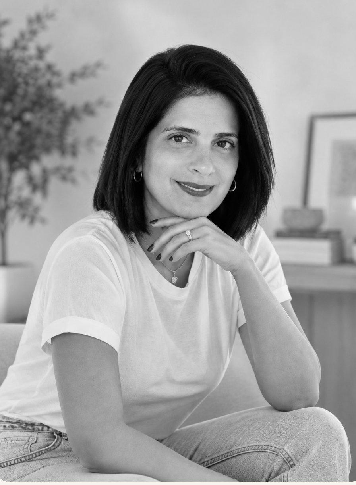

נעים להכיר, אני מורן
שני מרחבים.
אותה גישה של
עיניים טובות.
אימון אישי והורי לנשים ואמהות, לצד צהרון ביתי חם שבו ילדים מרגישים שרואים אותם באמת.

איך אפשר להמשיך מכאן?
בחרו את המרחב שמתאים לכם.
אימון אישי והורי
מרחב שהוא בשבילך
תהליך אישי לנשים ואמהות שרוצות לעצור, לדייק וליצור שינוי שמרגיש שלהן.
לעמוד האימון האישיצהרון ביתי
צהרון "עיניים טובות" ❤️
אווירה ביתית, יחס אישי ומקום שבו הילדים מרגישים שרואים אותם.
לעמוד הצהרון